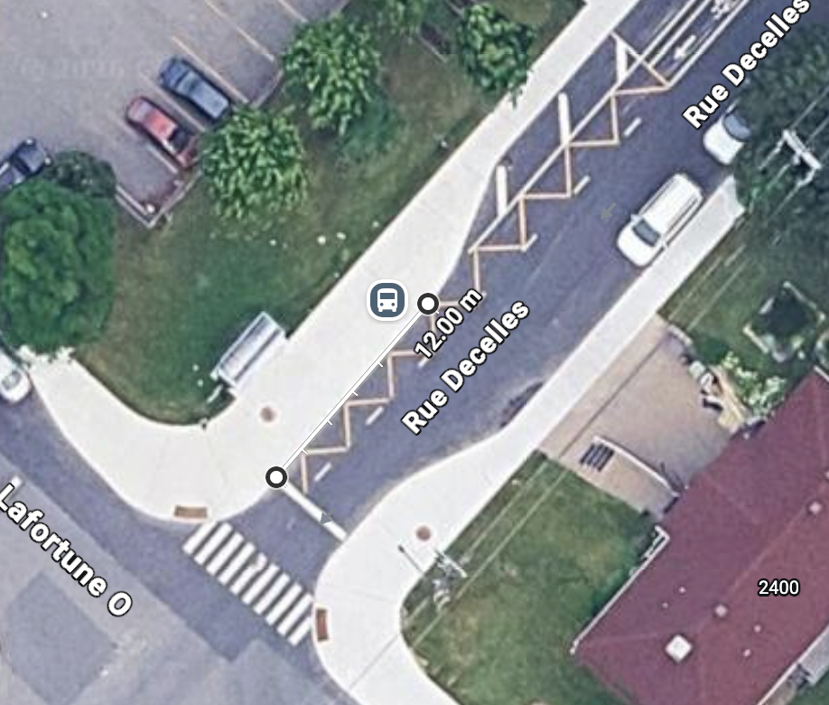
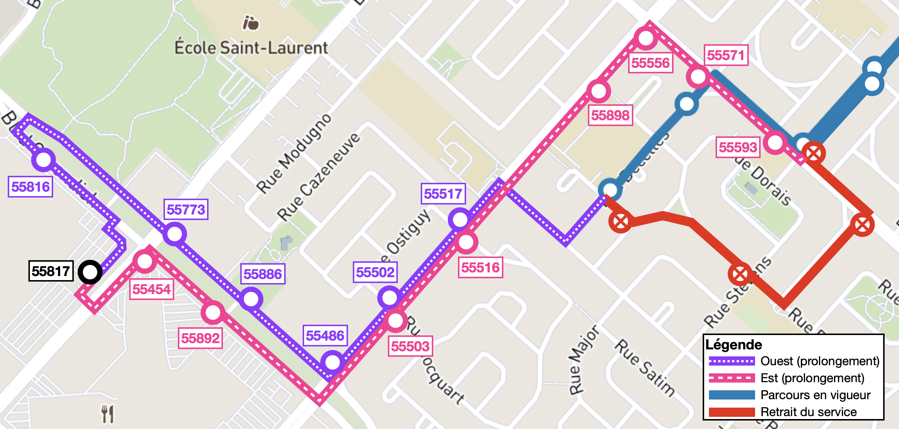

Ici, des modifications mineures sont proposés pour la ligne 16 pour améliorer son attrait et connectivité vers d'autres lignes du secteur.
Durant les consultations, l'enjeu de manque de connectivité vers la ligne orange, ainsi que vers d'autres lignes dans Saint-Laurent a été soulevé. En effet, comme cette ligne passe par de l'Église et ensuite Decelles, il n'y a aucune correspondance directe possible vers Côte-Vertu et Du Collège. De plus, comme cette ligne ne croise aucune artère majeure, aucune correspondance vers les lignes principales du secteur (par ex. 72, 121, 196, etc.) n'est possible. Cette problématique n'a pas été adressée durant cette refonte, puisque le trajet a été laissé tel quel.
De plus, il semble que depuis certains travaux de voirie, effectués en 2024, le bout de ligne actuel (55545 Decelles / Abbott) n'est plus approprié pour des battements; les aménagements ne laissent pas suffisamment de places pour un battement sans empiéter sur la piste cyclable ou la voie de circulation (voir la figure ci-dessous) :
Considérant également que la boucle Thimens est devenue vacante suite au retrait de la ligne 171, un court prolongement de cette ligne permet de résoudre plusieurs problématiques énumérées en même temps. Le trajet proposé sera suit:
Il s'agit d'un changement un peu plus substantielle. Cependant, considérant le niveau de service généralement faible de cette ligne ainsi qu'un battement généralement suffisamment long à Parc, je juge que ce prolongement peut se faire à coût plutôt faible. Enfin, en ce qui concerne les spéciaux École pour LaurenHill Academy, ces voyages peuvent demeurer tels quels sans modifications.